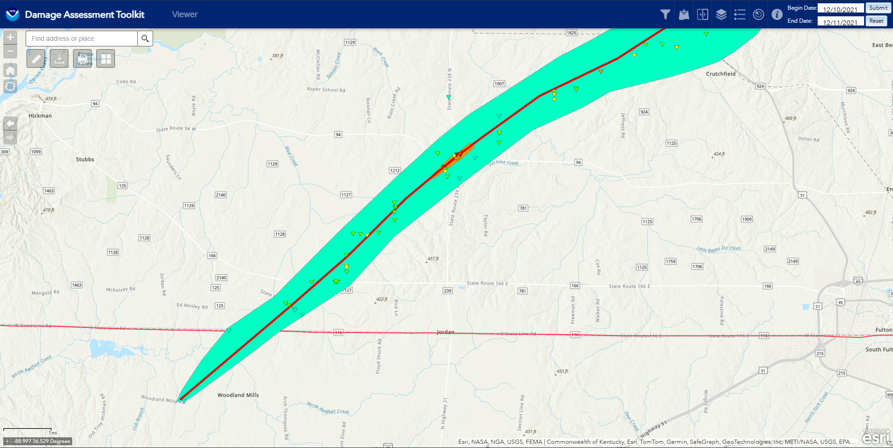
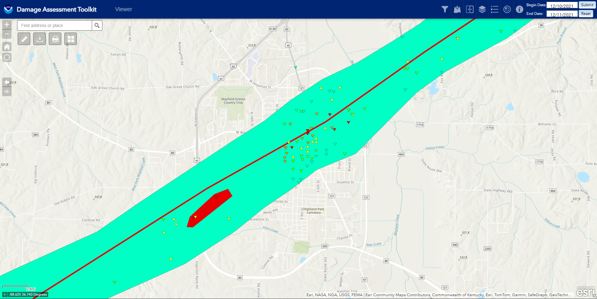
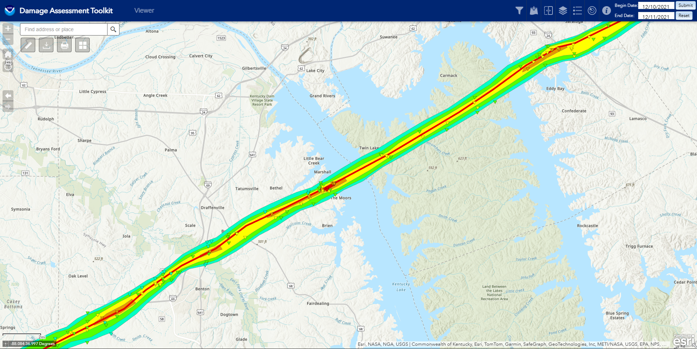
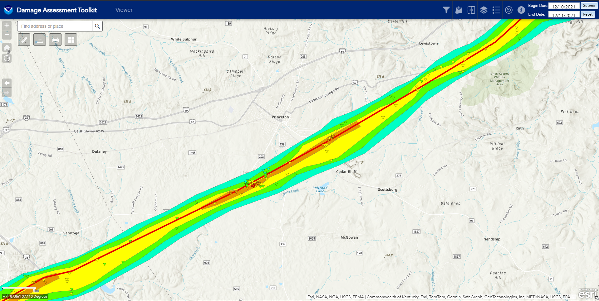
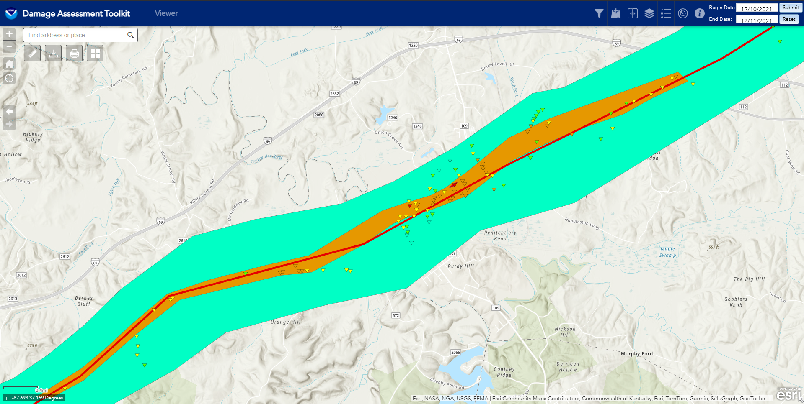
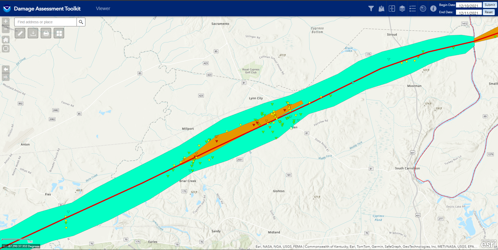

The Mayfield EF4
About The Event
On the evening of December 10th and into the early hours of the 11th, a tornado outbreak occurred. At 7:15pm, the first tornado touched down, a brief EFU that only left broken tree limbs, and was caught by storm chaser. By 7:40pm, the first tornado out of the Quad State Supercell that produced actual damage had touched to the ground. yet another weak EF1 tornado. The storm would cycle a few more times before dropping the Monette AR EF4 at 8:07pm, and would track just shy of 82 miles, until lifting at 9:36pm. During the roughly next 10 minutes, the cell would cycle again several times, producing several weak tornadoes, 2 EF0's and an EF1. It wasn't until 9:49 until the Western Kentucky (or Mayfield Ky) tornado would reach towards the ground. This tornado would be the highest-rated tornado of the entire outbreak.
The Survey

Touching down just a few miles away from the Tn/Ky border, the Western Kentucky tornado touched down, producing weak EF0 and EF1 damage. However, quite early on in its path it would produce EF4 damage, near the town of Cayce Ky. Just South-West of Cayce, the tornado impacted a home, leaving it as a pile of rubble ontop a concrete slab. Surrounding the property were trees, where some had minor debarking. The house was rated at 170mph EF4. In the town of Cayce, there were two more instances of EF4 damage, both were retail buildings and we completely slabbed. They were both rated at 167mph EF4. Weirdly enough, one of the buildings did have anchor bolts, but it looked like there may have been garage doors, and the scissor lift and company van were only moved a short distance. In the vans case, it was just rotated off the remaining concrete slab. After leaving Cayce Ky, the tornado continued on, leaving only mid-range EF3 damage from collpasing several different metal truss towers, used as electrical transmission lines. It remained relatively weak throughout this period, one DI of interest is a house directly in the center of the path that only sustained low-end EF0 damage.

As the tornado started to head into the city limits of Mayfield Ky, we can start to see more widespread EF4 damage, along with a few controversies, lets start when the tornado was just begining to hit the town. The first instance of EF4 damage is of a house. It was a complete slab, but had a poor foundation, a CMU concrete block foundation. From the singular photo, its hard to tell how well the house was anchored to this, but the surveyors did rate it at 180mph EF4, with the DOD text saying "Destruction of engineered and/or well constructed residence; slab swept clean". Basing off of this, I'm assuming the house wasn't properly anchored to the foundation (probably with nails I'd image), but since there was literally no debris left, I can understand this rating. Oddly enough, the neighbours house got the exact same rating, as it was a similiarly constructed house. On both of these properties, there are plenty of trees, some of which are partially debarked. The tornado is now starting to become noticeably a bit more stronger. At the other end of this EF4 polygon on the DAT, is the candle factory, this is where one of the controversies appears, if you want to learn more, check out this atricle which has photos of the aftermath, which the DAT does not have an attached image. Further into the city, we can start to see even more violent damage. Several low-rise buildings were hit and they surveyors noted 188mph EF4 damage, which was assigned to 4 different low-rises. For the rest of the EF4 DI's, they were all rated at 170mph EF4, most were family homes, but one was a rehab center.

Exiting Mayfield Ky, the tornado went back to sporatically producing EF3 damage, and wouldn't produce EF4 damage until right before it went over the Kentucky Lake. There are 4 EF4 DI's total, but they represent quite a few houses, as this area had many cottages. All 4 of these DI's were given blanket 170mph EF4 DI's, since there was just an insane amount of EF4 DI's both here and along the entire path. Other houses got 165mph EF3 DI's. Moving further down, in the Land Between The Lakes Recreational Area, we mostly see EF2 and lower DI's, which is just tree damage. We see EF3 damage again when it finally crosses the lake. In the same way as the other side of the lake, blanket EF3 DI's were given out to dozens of homes. This time rangine from 150mph to 160mph.

South of the town of Princeton Ky, we can see more EF4 damage. Starting at a golf course just south-west of town, we see a subdivision that was directly impacted. Unfortunately, the ground surveys werent able to get to the area until over a month after, so these surveys were done by aerial drone photos. Two houses got rated 170mph EF4, one rated 175mph EF4, and the last one was rated at 180mph EF4. On the other side of town, EF3 damage was noted, mostly with tree damage.

The next town to be impacted was Dawson Springs Ky, which had taken a direct hit. EF3 damage was now consistantly along the damage path, and we see two EF4 DI's in the town. This first one was for a neighbourhood of duplexes, one of which had all of its walls collapsed. The second EF4 DI is of a two-story apartment building, which got rated at 180mph. The damage here is pretty interesting, only some interior walls of the first story remained, but the neighbours house looks like it only recieved low-end EF0 damage. Surrounding these two EF4 DI's is a sea of EF3 Di's, mostly rated in the upper end of the EF3 range, between 160mph to 165mph.

The last bit of EF4 damage occurs in and near Bremen Ky. The first EF4 DI was rated at 170mph, with the house having all of its wall collapsed and a nearby home was completely slabbed. The next EF4 DI is the most controversial one, and the one I will talk about later. The last three EF4 DI's are all listed at 170mph. The first one was an unachored home which was completely slabbed. The next one was of a similiar construction, but the comment on the DI states "high EF3 or 4" which is interesting. The last EF4 DI is a two-story home that was almost completely slabbed to the foundation. It was not swept completely clean, but all walls were gone. This DI is also interesting like the last one, as it doesnt have a DOD, rather saying "JavaScript functions are disabled", which is just an error on whoever inputted the DI, still interesting nonetheless.The Controversial DI
Officially, this DI is rated at 190mph. It was a newly-constructed, well-built house, with solid anchoring to the foundation. The house itself was apparently lifted up in one piece, with some parts of its foundation carried along with it too, and then thrown into a nearby tree line, where it was then reduces to tiny bits.
Why It Isn't an EF5?
One of the reasons this tornado wasn't rated an EF5, specifically with this DI, was actually due to the foundation itself, not the anchoring like we normally see. Parts of the foundation were essentially resting ontop of a gravel base, usually some part of the foundation is dug into the earth, and is "planted" into the earth. This was one of the reasons why it was justified as an EF4. One of the other major points was the lack of contextual damage. The home sate right across from a small forest, which has essentially no debarking. It is believed that a sub-vortex had hit the home, causing the damage. One of the other points brought up was the actual constructing of the house, which had a porch with the roof overhanging it, along with an attached garage. These are two weakpoints in homes, where garage doors can easily be blown in, allowing winds to get into the home, and the porch allowing winds to grab onto the roof much mor easier.
Why I believe it should be rated an EF5
Throughout the path of this tornado, it has shown several times that it was a violent tornado. However, it literally did not hit a single DI that could've potentially been rated EF5.